| Trang gốc |
Vietnamese, with Unicode Times font |
|
Hành hương - 2003 Bình Anson -ooOoo- Tháng 11 năm nay (2003), chúng tôi về thăm Việt Nam và Thái Lan. Mục đích chính của chuyến đi nầy là để tham dự các buổi lễ Dâng Y Kathina trong truyền thống Phật giáo Nguyên thủy, thăm viếng các chùa và cơ sở từ thiện Phật giáo. Dưới đây là các ghi nhận tóm tắt trong chuyến du hành đó. ---*--- Tối thứ Năm, 30-10-2003: Tôi sửa soạn hành lý, đến phi trường quốc tế ở Perth để đáp máy bay sang Bangkok. Thứ Sáu, 31-10-2003: Phi cơ rời Perth lúc 2:00 giờ sáng, ghé qua Phukiet - một thành phố du lịch ở miền nam Thái Lan, rồi đến phi trường Bangkok lúc 9:30 giờ sáng. Em vợ tôi đến đón ngay trong phi trường vì anh ấy làm việc tại đó. Chúng tôi ngồi uống café, hàn huyên tâm sự. Tôi vào nghỉ tại khách sạn tại phi trường. Sau đó, tiếp tục chuyến bay về Sài Gòn vào buổi chiều, lúc 6:00 giờ. Đến phi trường Tân Sơn Nhất vào 8:00 giờ tối. Thứ Bảy 01-11-2003: Buổi sáng sớm, tôi đến chùa Giác Ngộ, quận 10, gặp Đại đức Nhật Từ. Tôi quen biết Thầy từ trước, qua các hoạt động trên các trang web Phật giáo, và Thầy đã du hành sang Úc trong mấy tháng trước. Chùa ngày xưa là trường trung học Bồ Đề, nay được sửa sang lại, rất khang trang, ngăn nắp. Thầy tặng tôi các bộ lịch 2004 do chùa phát hành, với hình các chú tiểu rất trang nhã. Sau đó, tôi đến chùa Trúc Lâm, quận 6 (phía sau tháp Hòa Bình của ông Đạo Dừa ngày xưa) để dự lễ Dâng Y Kathina. Đây là lần đầu tiên tôi tham dự lễ này tại Việt Nam. Vị trụ trì là Sư Phúc Hỷ. Hằng năm, mùa Dâng Y kéo dài 4 tuần lễ, từ 16 tháng 9 âm lịch đến rằm tháng 10 âm lịch, nhưng tôi chỉ có thể thu xếp công việc để về tham dự vào tuần lễ cuối. Chùa tuy nhỏ hẹp, nhưng chư Tăng và Phật tử đến tham dự rất đông. Tôi rất vui mừng khi được gặp quý sư, quý tu nữ và các đạo hữu quen biết. Trong buổi lễ, tôi cúng dường một bộ đại y mang từ Perth, và tịnh tài cùng các đóng góp cúng dường của các thân hữu ở hải ngoại. Mùa Dâng Y được tổ chức trong 4 tuần lễ, mỗi ngày đều có lễ tại các chùa khác nhau trong hệ phái Nam tông. Đây cũng một dịp để các Phật tử quen biết gặp gỡ, và cũng là một dịp tốt để thăm viếng hành hương các chùa. Đối với các chùa vùng xa, ban tổ chức có bố trí xe đưa rước từ Sài Gòn, giá vé rất rẻ và tiện lợi. Chương trình lễ Dâng Y Kathina tại các chùa tương đối giống nhau, từ 8:00 giờ đến 12:00 giờ nếu cử hành buổi sáng, hoặc từ 13:00 giờ đến 16:00 giờ nếu cử hành buổi trưa, gồm có các điểm chính: 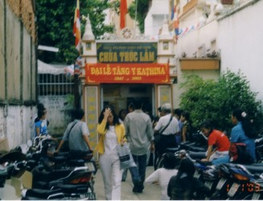
Trưa hôm đó, tôi vào Gò Vấp gặp người bạn đạo thân tình và là một cộng tác viên đắc lực của trang web BuddhaSasana. Tôi nhờ anh ấy sao chép các đĩa CD Phật học và đĩa tụng Pali, và nhận 200 quyển Giới Thiệu Đạo Phật mà tôi đã nhờ in để lưu hành nội bộ để xin ý kiến của chư Tăng Ni và thân hữu. Ghé vào Thiền viện Vạn Hạnh, trời mưa tầm tả, sân chùa vắng vẻ. Lần này, tôi có phước duyên gặp được vị thị giả của ngài Hòa thượng Minh Châu, và tôi xin phép lên lầu để thăm ngài. Sau hơn 10 năm, tôi mới có dịp được gặp và lễ lạy ngài. Sắc diện ngài vẫn còn hồng hào, hiền hòa, tươi vui, dù rằng đã già yếu hơn xưa. Chủ Nhật, 02-11-2003: Buổi sáng hôm ấy có lễ Dâng Y tại 2 chùa trong cùng một thời gian: chùa Từ Quang, Gò Vấp, và chùa Chantarangsay, Quận 3. Tôi mong rằng trong tương lai sẽ không có các trùng hợp đáng tiếc như thế, vì đa số Phật tử chúng tôi đều mong muốn đến dự lễ tại tất cả các chùa Nam tông. Chùa Nam tông trong thành phố không nhiều, và chư Tăng có thể tổ chức sắp xếp hành lễ vào các buổi sáng, chiều khác nhau để tránh sự trùng hợp. 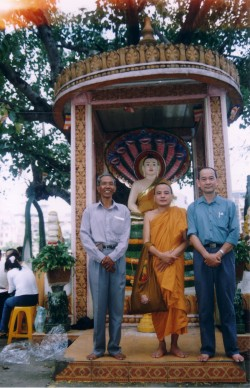Tôi quyết định đi dự lễ tại chùa Chantarangsay vì chùa ở gần nhà, và tôi cũng muốn quan sát cách thức hành lễ của các Phật tử Khmer. Tôi đến sớm, gặp Sư Danh Lung, trụ trì. Sư rất vui vì tôi đã có gặp Sư trong lần về thăm nhà năm trước, 2002. Rất đông Phật tử, Khmer và Việt, đến tham dự. Tôi cũng được gặp Sư Bửu Chánh, trụ trì thiền viện Phước Sơn, tỉnh Đồng Nai. Trong buổi lễ, tôi được dịp làm quen với Sư Trí Minh, và sau đó, đưa Sư về chùa Trúc Lâm ở huyện Hóc Môn. Chùa nằm sau một dãy tre xanh, mát mẻ. Sư ở đây nhiều năm, tu hạnh độc cư. Nay đã hơn 70 tuổi nhưng vẫn còn minh mẫn, hiền từ, vui vẻ. Sư cho tôi một tập tài liệu viết về cuộc đời của ngài Huệ Nghiêm để tôi phổ biến trên mạng. Tối hôm đó tôi đến dự tiệc họp mặt các bạn trung học, trong phong trào công tác xã hội ngày xưa. Lần này, được gặp thêm các bạn cũ từ Hoa Kỳ về thăm nhà. Thứ Hai, 03-11-2003: Cùng với các bạn Phật tử, chúng tôi đến dự lễ Dâng Y tại chùa Thiền Quang 1, Long Thành, trên một khu đất rất rộng, nhiều với nhiều cây xanh thoáng mát. Vị trụ trì là Sư Thiện Pháp. Sau cuộc lễ, tôi có gửi Sư một số tiền là 5 triệu VND để giúp cứu trợ nạn lụt miền Trung, do chùa Thiền Quang và chùa Kỳ Viên phối hợp tổ chức. Mấy ngày sau đó, chúng tôi có hùn phước thêm 1.2 triệu VND. Trong dịp này, tôi cũng có duyên gặp được quý chị Phật tử từ Pháp về thăm nhà. 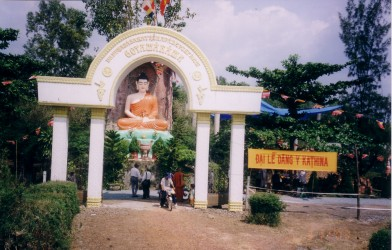Buổi trưa, chúng tôi ghé qua chùa Tam Phước, thăm vị trụ trì là Sư Chánh Định. Sau đó, đến dự lễ Dâng Y tại chùa Cồ Đàm. Chùa có một tượng Phật rất to, nhìn thấy dễ dàng ngay từ đường lộ chính. Toạ lạc trên một vùng đất trũng, chùa đang xúc tiến lấp nền để xây chánh điện mới. Trên đường về, chúng tôi ghé thăm chùa Bửu Long, trên một ngọn đồi cạnh xa lộ Biên Hoà, nhìn xuống sông Đồng Nai. Vị trụ trì là Sư Viên Minh đi vắng. Chúng tôi vào chánh điện lễ Phật, và gửi lại các đĩa CD và sách. Tối hôm ấy, tôi hẹn gặp một đạo hữu mà tôi chỉ quen qua mạng Internet. Trẻ và nhiệt tình, anh ấy đã giúp chúng tôi đánh máy vi tính nhiều kinh sách giá trị để phổ biến trên mạng. Không ngờ anh cũng là dân Đại học Bách Khoa, tốt nghiệp sau tôi nhiều năm. Tôi gửi tặng anh sách và đĩa CD Phật học.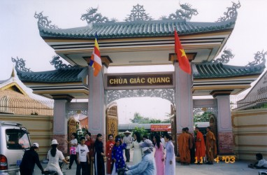 Thứ Ba, 04-11-2003: Buổi sáng chúng tôi đến chùa Giác Quang, bến Bình Đông, Quận 8, dự lễ Dâng Y, và cũng để dự lễ khánh thành cổng Tam Quan vừa mới xây. Trụ trì là Sư Thiện Đạt. Chùa vừa được trùng tu, có xây bảo tháp với tượng ngài Giác Quang bằng đồng đen, đúc từ Thái Lan. Phía sau chùa là các liêu thất dành cho quý vị tu nữ, rất khang trang. Trưa hôm đó, cùng với Sư cô Hiền (Diệu Tâm) và các thân hữu, chúng tôi đến thăm cô nhi viện Pháp Võ ở Phú Xuân, Nhà Bè. Trụ trì chùa Pháp Võ là Ni cô Như Thảo, trẻ, rất nhiệt tình. Ở đây nuôi dạy khoảng 150 em gái mồ côi. Chúng tôi cúng dường 5 triệu VND. Chùa đang có nhiều khó khăn cung cấp nước sạch cho các em tiêu dùng. Dự định cần phải khoan một giếng sâu khoảng 300 mét để lấy nước ngọt. Phí tổn ước tính là 75 triệu VND. Mong rằng sẽ có nhiều vị mạnh thường quân phát tâm hỗ trợ. Chúng tôi cũng đến thăm cô nhi viện Kỳ Quang ở Gò Vấp. Đây là nơi chăm nuôi các em khuyết tật. Sư trụ trì là Thượng tọa Thiện Chiếu, rất vui tính. Các em cô nhi ở đây rất yêu mến ngài. Chúng tôi góp phần cúng dường 5 triệu VND. Buổi tối tôi dự tiệc họp mặt các bạn cựu sinh viên Kỹ sư Hóa học, qua đó, chúng tôi thảo luận thêm về việc thành lập quỹ khuyến học, tài trợ cho các em sinh viên nghèo. Thứ Tư, 05-11-2003: Buổi sáng, chúng tôi dự lễ Dâng Y ở thiền viện Phước Sơn, Long Thành. Thiền viện tọa lạc trên một ngọn đồi rộng lớn, cây xanh rậm mát, có một con suối chảy ngang, với nhiều liêu cốc cho các vị tỳ kheo, tu nữ và thiền sinh cư sĩ. Vị trụ trì là Sư Bửu Chánh. 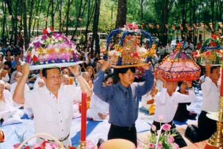 Hôm nay có rất đất đông chư Tăng Ni và Phật tử đến tham dự. Chư tăng khoảng 150 vị, và rất nhiều vị tu nữ. Trong dịp này, chúng tôi gặp được một đạo hữu cùng ở thành phố Perth về dự lễ Dâng Y năm nay. Tôi gửi tặng thư viện của thiền viện các đĩa CD và kinh sách tham khảo Anh ngữ. Sau khi ăn trưa tại Phước Sơn, chúng tôi sang chùa Y Sơn gần đó, lễ lạy Phật và cúng dường Tam Bảo. Sau đó, cùng với Sư cô Hiền và một số đạo hữu, chúng tôi ghé vào thăm cô nhi viện Diệu Pháp do Sư cô Huệ Đức quản lý, cúng dường 5 triệu VND. Các em hát tặng chúng tôi những bài ca đạo, rất hay, rất cảm động.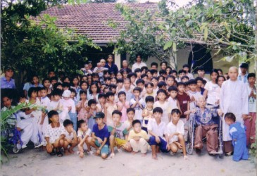Đến Bà Rịa, vào khu Núi Dinh, thăm viếng thiền viện Viên Không, gặp Sư Hộ Pháp. Mặc dù đang bận rộn với công việc tu sửa sang các liêu cốc, Sư đã dành nhiều thì giờ để tiếp chuyện với chúng tôi. Tôi gửi Sư quyển sách để xin ý kiến, và Sư cũng có tặng tôi các sách mới của Sư. Buổi tối, cùng với một người bạn, tôi đến dùng cơm chay tại nhà nghệ sĩ cải lương Bạch Tuyết do chị thết đãi, và trao đổi với chị nhiều vấn đề trong đạo pháp. Thứ Năm, 06-11-2003: Buổi sáng tôi đến dâng y tại chùa Phước Hộ, Long Thành. Vị trụ trì là Sư Minh Huệ, dịch giả nhiều bộ kinh sách và tôi đã có quen từ năm ngoái. Trước đó, có lễ xuất gia Sa-di cho 2 chú Phật tử trẻ tuổi. Chùa đang kêu gọi đóng góp để xây dựng chánh điện. Trong dịp nầy, tôi gặp được Sư cô Diệu Tịnh và Huệ Tú. Sư cô Diệu Tịnh đã có nhiều đóng góp thường xuyên trên các diễn đàn pháp đàm Paltalk của Phật giáo Nguyên thủy. Trưa hôm đó, tôi đến thăm chùa chùa Quảng Nghiêm, vào chánh điện lễ lạy Phật, và gặp 2 chú Sa-di trẻ. Sau đó, sang chùa Ngọc Đạt dự lễ Dâng Y. Chùa đẹp và khang trang, tiếc rằng ngõ đi vào cổng chính đã bị lấn chiếm, xe không vào được.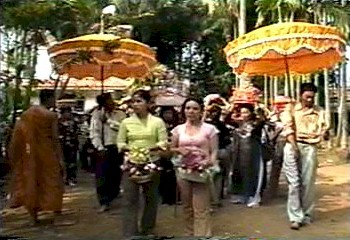 Trở về Sài Gòn, tôi đến chùa Vĩnh Nghiêm, Quận 3. Mục đích là đến thăm tòa sạn tạm thời của báo Giác Ngộ. Tôi được gặp Thầy Tâm Hải, và được Thầy tặng bộ Phật Học Cơ Bản, ấn bản mới. Ở đây, tình cờ tôi gặp được Sư Thiện Hạnh (trụ trì chùa Nam Tông, Bình Chánh) là một giảng sư tại trường Phật học chùa Vĩnh Nghiêm. Tôi có đến chùa Nam Tông thăm Sư trong lần về thăm nhà năm 2002. Sau đó, tôi đến đường Nguyễn Đình Chiểu để đóng tiền mua báo Giác Ngộ. Thu ngân viên là Ni cô Liên Thủy mà tôi có gặp năm trước. Sau khi hỏi chuyện, mới biết Ni cô là người cùng quê Gò Công với chúng tôi. Buổi tối, tôi đến viếng Việt Nam Quốc Tự. Bây giờ, khuôn viên chùa thu hẹp, chỉ còn lại một tháp lớn, xây trước năm 1975, và đã được trùng tu, sơn sửa. Bên trong có thờ nhiều tượng Phật và Bồ-tát. Tôi thấy có rất nhiều người đến cúng bái, cầu xin, van vái. Thứ Sáu, 07-11-2003: Buổi sáng cùng với một người bạn đi về thị xã Mỹ Tho, đến dự lễ tại chùa Pháp Bảo, vị trụ trì là Sư Bửu Hiền. Lễ Dâng Y ở đây rất trang nghiêm, tổ chức rất tốt, có nhiều trật tự hơn, so với các chùa khác. Chùa mới được sửa sang, và có bảo tháp ngài Hòa thượng Pháp Lạc. Tôi ghé vào thăm chùa Vĩnh Tràng, một di tích lịch sử, và gặp nhiều đoàn du khách, trong và ngoài nước. Tôi vào quầy sách của chùa, mua vài quyển kinh sách và tư liệu giới thiệu các chùa trong tỉnh Tiền Giang. Chị quản lý quầy sách là một giáo viên về hưu, hỏi ra thì chị cũng là người cùng quê ở Gò Công. 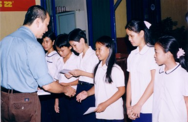Buổi trưa hôm đó, chúng tôi đến dự lễ tại chùa Phước Hải ở Tân Hiệp, vị trụ trì là Sư Pháp Ngộ. Chùa nầy đầu tiên do ngài Ẩn Lâm sáng lập, có một lối kiến trúc rất độc đáo. Buổi tối, tôi đến trường trung học phổ thông Nguyễn Huệ, Quận 4, phát 10 học bổng, tổng trị giá 2 triệu VND. Lớp ban đêm dành cho các em học sinh nghèo, vì ban ngày các em phải giúp cha mẹ buôn bán lặt vặt. Hiệu Phó của trường là một bạn học cũ ngày xưa. Sau đó, tôi cùng anh bạn ấy đến dự tiệc họp mặt các bạn cựu học sinh trường Petrus Ký. Tôi rất cảm động khi gặp lại các bạn học sinh thời trung học. Trông ai cũng già, rất khó nhận ra. Thứ Bảy, 08-11-2003: Hôm nay là rằm tháng mười âm lịch, ngày cuối của mùa Dâng Y Kathina. Buổi sáng có 2 chùa tổ chức lễ cùng một thời gian: chùa Nguyên Thủy ở Cát Lái, Quận 2, và chùa Bửu Đức ở Biên Hòa. Rất khó chọn lựa vì tôi đã có ý định đi viếng cả 2 nơi đó. Cuối cùng, tôi chọn đi dự lễ chùa Nguyên Thủy vì đã có hứa trước với Sư Pháp Chất, vị trụ trì chùa. Đồng thời, tôi cũng muốn đến xem cảnh chùa sau 2 năm trùng tu, xây dựng.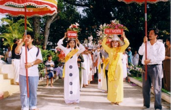 Buổi lễ có rất đông chư Tăng Ni tham dự, khoảng 300 vị, trong đó có nhiều vị đến từ các chùa vùng xa ở miền Tây. Cuộc lễ và buổi hành đầu đà suốt đêm hôm đó được trực tiếp truyền thanh và truyền hình đến các Phật tử trên thế giới qua mạng Paltalk. Trong buổi lễ, sau khi hành Tăng sự, có thêm phần lễ mặc Y Kathina, tương tự như truyền thống tôi đã quan sát tại các chùa Khmer. Tuy nhiên, ở tu viện Bodhinyana tại Tây Úc, cộng đồng cư sĩ chỉ dâng một tấm vải y đặc biệt, dài khoảng 3 mét. Sau đó, các vị tỳ kheo phải bố trí tranh thủ may tấm y đó trong cùng một ngày để y Kathina được thành tựu. Buổi chiều, tôi đến gặp vị giám đốc nhà sách và nhà xuất bản Trí Tuệ để bàn về việc xuất bản kinh sách Phật giáo và các hoạt động Phật sự khác. Tối hôm đó, tôi đến chùa Kỳ Viên, tham dự buổi tụng kinh chiều, và gặp sư Giác Lộc. Sư đã dịch nhiều bộ sách quý của ngài Tỳ kheo Bodhi của hội Buddhist Publication Society, Sri Lanka. Sư hứa là sẽ bố trí cho đánh máy vi tính các dịch phẩm của Sư để chúng tôi phổ biến trên trang web BuddhaSasana. Chủ Nhật, 09-11-2003: Gia đình chúng tôi đến chùa Diệu Quang, quận Tân Bình. Chùa này do ngài Hòa thượng Giới Nghiêm thành lập cho các vị tu nữ, tọa lạc gần chùa Phật Bảo. Tôi có nhờ Sư cô Hiền, quản lý chùa, tổ chức một buổi lễ dâng Bạch Y và Tứ Vật Dụng đến quý tu nữ, và có thỉnh mời 20 vị tu nữ đến dự, trong đó có một vị đã 92 tuổi nhưng vẫn còn khỏe mạnh, minh mẫn. Chúng tôi cũng có thỉnh mời quý Sư Chánh Niệm (trụ trì chùa Phật Bảo), Chánh Định (trụ trì chùa Tam Phước), Ngọc An (trụ trì chùa Bodhivamsa) đến chứng minh. Sau đó có một buổi lễ phát học bổng và quà tặng cho 20 em học sinh nghèo trong vùng. 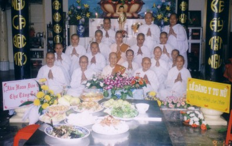Buổi chiều tôi đến thăm viếng chùa Ấn Quang, quận 10. Chùa rất khang trang và đẹp. Tôi đến gặp Thượng tọa Giác Toàn, đang có một buổi thuyết giảng hàng tuần ở đó. Tôi cùng đi với Thầy về Tịnh xá Trung Tâm, quận Bình Thạnh. Hôm đó là ngày sinh nhật của Thầy, có rất nhiều Tăng Ni và Phật tử cư sĩ đến mừng và chúc thọ Thầy. Có những vị đến từ vùng xa trong tỉnh Bình Dương. Buổi lễ trang nghiêm, đơn giản và thân mật. Tại Tịnh xá, tôi được gặp Thầy Minh Thành, một vị giảng sư trẻ của hệ phái Khất sĩ. Thầy đã tốt nghiệp Tiến sĩ Phật học tại Ấn độ. Tôi được Thầy tặng cho các bản vi tính của quyển luận án tốt nghiệp tiến sĩ và các dịch phẩm của Thầy, để đăng vào trang web. Thứ Hai, 10-11-2003: Tôi cùng các bạn cựu sinh viên trường Hóa Học đến Đại học Bách Khoa để phát học bổng cho 13 em sinh viên năm cuối của khoa Hóa, tài trợ các em làm luận văn tốt nghiệp. Tôi rất xúc động khi trở về thăm trường xưa, nơi đã từng theo học hơn 30 năm trước.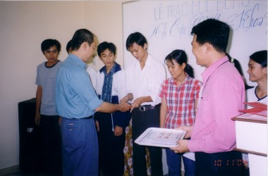 Buổi chiều, theo lời mời của Sư Thiện Minh, tôi đến chùa Kỳ Viên, quận 3, dự lễ phát quà cho 15 gia đình nghèo trong vùng, và cũng để tham gia công tác gói quà cho chuyến đi cứu trợ đồng bào bị thiên tai lũ lụt miền Trung. Chuyến đi cứu trợ sẽ khởi hành ngày hôm sau, mang theo 300 phần quà, mỗi phần quà gồm 5 kg gạo, 1 thùng mì gói, 1 chai nước tương, thuốc tây, mền, vài bộ quần áo, và một bao thơ có 50 ngàn VND. Tham dự có quý sư Pháp Chất, Chánh Minh, Thiện Minh, Chánh Định, Đức Trí, nghệ sĩ cải lương Bạch Tuyết và Lệ Thủy, cùng các anh chị Phật tử của chùa và Phật tử Việt kiều từ Mỹ, Úc và Pháp. Thứ Ba, 11-11-2003: Buổi sáng, tôi ra chợ Bến Thành để mua một ít quà cho gia đình. Chợ rất ngăn nắp, sạch sẽ, và trật tự hơn xưa. Buổi trưa, cùng với một chị bạn học cũ, chúng tôi đến viếng chùa Hoằng Pháp ở Hóc Môn. Chùa rất rộng, khang trang, phong cảnh đẹp, trong lành. Hôm đó có một khóa tu Phật thất, với tiếng niệm Phật A-di-đà thanh nhẹ từ các loa phóng thanh. Chúng tôi gặp được vị trụ trì là Đại đức Chân Tịnh, và được hướng dẫn đi tham quan các cơ sở trong chùa. Thứ Tư, 12-11-2003: Chúng tôi bắt đầu chuyến đi hành hương miền Tây Nam bộ, với ý định chủ yếu là thăm viếng các chùa Nam tông Khmer, và trường Phật học ở các tỉnh. Cùng đi có vài người bạn học cũ của khóa Kỹ sư Hóa học. Đầu tiên, chúng tôi ghé qua chùa Thiên Khánh, thị xã Tân An, và cũng là trường Phật học tỉnh Long An. Đến thị xã Mỹ Tho, chúng tôi đi thăm trường Phật học tỉnh Tiền Giang tại chùa Phật Ân. Tại mỗi nơi, tôi đều gặp được quý Thầy trụ trì, xin phép vào chánh điện lễ lạy Phật, và gửi đặng đĩa CD Phật Học và quyển Giới Thiệu Đạo Phật. Như thường lệ, mỗi lần về Việt Nam, tôi đều cố gắng thu xếp về Đồng Sơn, huyện Gò Công, Tiền Giang, đến lễ lạy phần mộ ông bà, cha mẹ, và họ hàng xa gần. 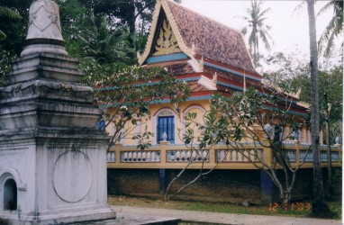Thẳng tiến đến Vĩnh Long, chúng tôi viếng chùa Hạnh Phúc Tăng (Sanghamangala), ngôi chùa cỗ xưa của Phật tử Khmer, đã thiết lập hơn ngàn năm trước. Đặc biệt đa số các chùa Nam tông Khmer ở miền Tây đều giữ gìn, bảo tồn các cây cỗ thụ cao, cành lá rậm rạp xanh mát, trong khuôn viên chùa, nên rất dễ nhận thấy từ xa. Ở đó, chúng tôi gặp một phái đoàn du khách người Bỉ, và tôi được dịp giải thích cho họ biết thêm về vài điểm chính trong truyền thống và kiến trúc của Phật giáo Nguyên thủy. Đến tỉnh Trà Vinh, chúng tôi viếng chùa Bến Có, chùa Bà Om, và chùa Hang của đồng bào Khmer. Chung quanh chánh điện các chùa nầy đều có 8 tượng đá làm dấu cương giới Sima, đặt trong các kiến trúc hình tháp nhỏ. Cũng như chùa Hạnh Phúc Tăng, chùa Bà Om Samrong-Ek đã được công nhận là một trong những di tích văn hóa lịch sử. Phía sau chùa là một hồ nước ngọt rất rộng với hàng cây xanh cao lớn trồng chung quanh. Hồ nầy có tên là Ao Bà Om. Tôi dâng một bộ tăng y đến vị trụ trì là Sư Sóc San. Sau đó, được Sư cho xem các bản kinh nguyên thủy viết trên lá buông cỗ xưa, lưu truyền qua nhiều thế hệ. Tại chùa Hang, chúng tôi đi qua một cổng chính, tường rất dày, khoảng 10 mét, như thể đi xuyên qua một cái hang, có lẽ vì thế mà gọi là chùa Hang. Chùa này có hơn 50 vị tỳ kheo tu học tại đó. Chúng tôi có phước duyên được vào chánh điện, ngồi nghe chư tăng tụng kinh Pali buổi chiều, âm hưởng Khmer. Đây là lần đầu tiên tôi được nghe chư Tăng Khmer tụng kinh, và tôi rất cảm kích và hoan hỷ. Tối hôm đó, chúng tôi trở về nghỉ đêm tại Vĩnh Long. Thứ Năm, 13-11-2003: Buổi sáng chúng tôi đến thăm chùa Viên Giác, do ngài Tịnh Sự từng là trụ trì. Chùa nầy khởi nguyên là một chùa Bắc tông, nhưng về sau chuyển sang truyền thống Nam tông, sau khi ngài đi tu học ở Campuchia và Thái Lan, và trở về Việt Nam hành đạo. Hiện nay, vị trụ trì là Tu nữ Thánh Trí. Sau đó, chúng tôi thăm viếng chùa Siêu Lý, và gặp vị trụ trì là Sư Giác Sơn và giảng sư Giác Giới. Đây là một nơi đào tạo tăng tài cho Phật giáo Nam tông, với các lớp giáo lý, Vi Diệu Pháp và Pali. Sư Giác Sơn tặng cho chúng tôi các hình ảnh, băng giảng cassette, và đĩa VCD về các sinh hoạt của chùa. Đồng thời, Sư Giác Giới cũng tặng cho chúng tôi kinh sách, và các bản vi tính bộ Vị Trí của Vi Diệu Pháp và các bản vi tính về Luật tu sĩ.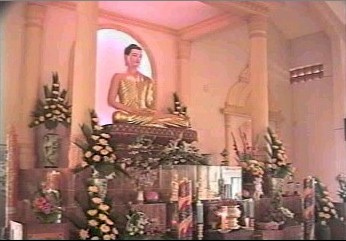 Từ Vĩnh Long, sang Cần Thơ, chúng tôi đến thăm trường Phật Học tại chùa Bửu Ấn. Đây là một chùa của chư Ni, kế bên có một tiệm cơm chay do chùa quản lý để gây quỹ sinh hoạt cho chùa. Tôi gửi tặng thư viện chùa một đĩa CD và sách Phật học. Đến Rạch Sỏi, trước khi vào thị xã Rạch Giá, chúng tôi ghé vào viếng chùa Keo Munivamsa Thondon, thường gọi là chùa Rạch Sỏi. Vị trụ trì là Sư Danh Dĩnh. Chùa có khoảng 25 vị tỳ kheo. Hôm đó, chư Tăng đang sửa soạn khóa thiền 10 ngày, có nhiều cư sĩ đến tham dự. Chúng tôi đi tham quan quanh chùa, đến lễ lạy tại bảo tháp thờ xá lợi Phật, và được vị trụ trì cho phép chiêm bái xá lợi. Thật là một đại phước duyên. Từ Rạch Sỏi, chúng tôi thẳng đến thị xã Rạch Giá. Đường xá mở mang rộng rãi, không còn nhận ra được nữa. Lần cuối tôi về thăm Rạch Giá là năm 1970. Nay đã thay đổi rất nhiều. Tôi không còn thấy đồng trống ven đường, mà chỉ toàn là nhà phố, trải dài từ Rạch Sỏi đến cổng tam quan vào thị xã. Đến cổng tam quan, chúng tôi rẻ phải đến chùa Láng Cát Ratanarangsi. Vị trụ trì là Hòa thượng Danh Nhưỡng. Chúng tôi đến lễ lạy ngài, dâng một bộ y, vấn an và hầu chuyện ngài gần một giờ. Nhà lồng chợ Rạch Giá ngày xưa nay không còn nữa, thay thế bằng một công viên với nhiều cây xanh. Chợ cá đồng và chợ cá biển bên bờ sông cũng đã được dời đi nơi khác, nay chỉ còn dấu vết ở hai bên cầu. Chúng tôi nghỉ đêm tại một khách sạn gần khu chợ mới, mà ngày xưa là bến xe Hà Tiên. Thứ Sáu, 14-11-2003: Chúng tôi đến viếng chùa Phật Quang, một chùa Bắc tông ở đường Quang Trung. Vị trụ trì là Đại đức Minh Nhẫn mà tôi đã từng liên lạc qua email và điện thoại. Hiện nay, Thầy đang ở Trung quốc để hoàn tất luận án tiến sĩ. Sau đó, chúng tôi đến thăm chùa Phật Lớn của Phật giáo Nam tông Khmer, ở trên cùng một đường. 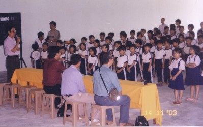Chúng tôi tiếp tục lên đường đi Hòn Đất, viếng thăm trường tình thương Phật Quang, do Thầy Minh Nhẫn làm hiệu trưởng. Trường hiện đang nuôi 100 em mồ côi hoặc gia đình nghèo, từ lớp 1 đến lớp 4. Các em rất ngoan và lễ phép. Chúng tôi có dự một buổi trình diễn văn nghệ do các em diễn xuất. Sau đó, chúng tôi đóng góp 10 triệu VND vào quỹ điều hành trường. Đến Sóc Sơn, chúng tôi thăm chùa Sóc Xoài (Rajakusala Bompenhjaya). Chùa hiện có hơn 100 tỳ kheo đang theo học các lớp giáo lý và tiếng Pali. Vị trụ trì là Sư Danh Phải. Từ đường quốc lộ đi vào chùa bằng một đường nhỏ, qua một con kênh. Cây cầu gỗ bắt qua kênh đã bị hư hại, gần sụp. Mong rằng sẽ có các vị Phật tử mạnh thường quân phát tâm cúng dường một cầu xi măng vững chắc, giúp cho chư Tăng và đồng bào trong xóm đi lại được dễ dàng và an toàn hơn. Đến Hòn Chông, chúng tôi mua vé tàu cao tốc để đi Phú Quốc. Từ Hòn Chông ra Phú Quốc mất khoảng 1giờ. Chúng tôi đến thị trấn Dương Đông và nghỉ đêm tại đó. Thứ Bảy, 15-11-2003: Chúng tôi dành trọn ngày, thuê xe đi tham quan toàn đảo Phú Quốc. Đảo nầy đang phát triển du lịch, nhưng có nhiều nơi vẫn còn giữ rừng nguyên sinh. Mong rằng có kế hoạch tốt để bảo tồn các khu rừng sinh thái nầy. Chủ Nhật 16-11-2003: Rời Phú Quốc, chúng tôi đi tàu cao tốc trở về Hòn Chông, thăm viếng chùa Hang tại đó. Chùa xây trong một hang đá vôi, từ đó nhìn ra khơi là Hòn Phụ Tử mà tôi đã từng xem qua tranh ảnh, nay là lần đầu tiên mới thấy tận mắt. Rời Hòn Chông, chúng tôi ghé vào thăm chùa Ba Trại Suvanasakho (Hải Sơn). Đây là một chùa nghèo, chỉ có vài vị tỳ kheo tu học tại đó. Trong mùa Dâng Y vừa qua, tôi có kêu gọi các gia đình Phật tử ở Tây Úc hùn phước đóng góp cho buổi lễ tại chùa nầy.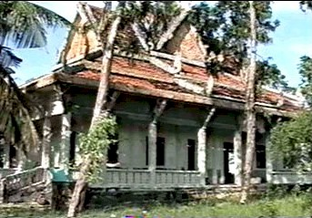 Lên đường đi đến thị trấn Hà Tiên, chúng tôi viếng thăm Thạch Động, bỗng nhớ lại chuyện cổ "Thạch Sanh, Lý Thông" mà ngày xưa đã từng đọc khi còn là học trò tiểu học. Tại đây, chúng tôi nhìn thấy được biên giới của Việt Nam và Campuchia. Chúng tôi đến viếng tịnh xá Ngọc Tiên của hệ phái Khất Sĩ. Tịnh xá tọa lạc trên một ngọn đồi cao, từ nơi đó, có thể nhìn được toàn cảnh thị trấn Hà Tiên, rất đẹp. Đến thăm chùa Thiên Trước, còn gọi là chùa Phật Lớn. Vị trụ trì là Sư Pháp Hảo, trẻ và vui tính. Sư cho biết trong 70 ngôi chùa Nam tông của tỉnh Kiên Giang, đây là ngôi chùa duy nhất của chư tăng người Việt, còn các chùa khác là của cộng đồng Khmer. Trở lại Rạch Giá, rồi thẳng đường về Cần Thơ, nghỉ đêm tại đó. Buổi tối, chúng tôi rảo bộ tham quan bến Ninh Kiều, đẹp, sạch và trật tự hơn xưa. Thứ Hai, 17-11-2003: Rời Cần Thơ, thẳng đường về Sài Gòn. Thứ Ba, 18-11-2003: Tôi nghỉ ngơi trọn ngày, và đi mua sắm loanh quanh thành phố. Buổi tối, tôi nhờ người cháu lái xe gắn máy đưa đến chùa Viên Giác, ở khu chợ Ông Tạ. Chùa nằm khuất trong một đường nhỏ, bên trong xây dựng kiến trúc rất thẩm mỹ, với chánh điện mở rộng, không vách ngăn, rất thông thoáng. Mục đích là để gặp Sư Tâm Hạnh, giảng sư Nam tông tại đó. Nhưng hôm ấy Sư đi vắng, và tôi có gửi lại các quyển kinh sách và đĩa CD. Thứ Tư, 19-11-2003: Buổi sáng tôi đến chùa Siêu Lý, Phú Định (quận 6), dự lễ bổ nhiệm tân trụ trì. Vị trụ trì cũ là Sư Tịnh Thân, viên tịch năm ngoái. Vị trụ trì mới là Sư Pháp Nhiên. Hôm nay có rất đông chư Tăng Ni thuộc mọi hệ phái đến tham dự. 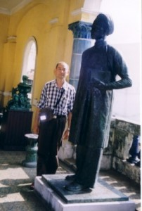Trưa hôm đó tôi đi tham quan Viện Bảo Tàng Mỹ Thuật của thành phố, ngày xưa là khu biệt thự Chú Hỏa (Hui Bon Hoa). Khi rảo bước xem các phòng ốc, tình cờ tôi thấy được tượng ông Petrus Ký. Tượng đứng, toàn thân, bằng đồng đen. Ngày xưa, tượng nầy được đặt tại công viên trước Dinh Độc Lập, góc đường Công Lý và Alexandre de Rhodes. Là một cựu học sinh trường trung học Petrus Ký, tôi rất vui mừng và cảm động khi nhìn lại được tượng nầy. Sau đó, tôi đến chùa Linh Sơn, đường Cô Giang, Cầu Kho. Mục đích là để xem cây cổ thụ bồ đề mà ngài Hoà thượng Narada đã đem nhánh từ Sri Lanka đến trồng từ 70 năm trước. Cây được trồng ngay trước sân chùa, nay rất cao lớn, cành lá xum xuê. Vào chánh điện lễ lạy Phật, tình cờ tôi gặp một sư bà ở đó. Hỏi chuyện, mới biết sư bà là thân mẫu của vị trụ trì một chùa Bắc tông nổi tiếng ở thành phố Melbourne, Úc châu, mà tôi có quen biết. Thật là một duyên hội ngộ bất ngờ. Thứ Năm, 20-11-2003: Tôi đưa các bạn cũ thời trung học và vài vị đạo hữu đến viếng thiền viện Viên Không ở Núi Dinh, Bà Rịa, thăm quý Sư Hộ Pháp và Pháp Thông. Đến đúng giờ độ thực, nên chúng tôi lại có duyên để bát cho chư Tăng. Nơi đây, các Sư theo truyền thống đầu đà, chỉ ăn trong bát. Sau khi nhận thức ăn cúng dường, chư Tăng đọc các bài chúc phúc bằng tiếng Pali và Việt, rồi trở về liêu cốc riêng để thọ thực. Chúng tôi đến thăm Đại Tòng Lâm và ăn trưa tại một quán cơm chay trước cửa chùa. Sau đó, ghé thăm thiền viện Thường Chiếu, rộng lớn, trang nghiêm và yên tĩnh. Chúng tôi đến nhà sách của chùa để thỉnh kinh sách, mua một ít hộp tương, bánh kẹo, và quà lưu niệm.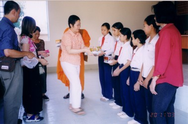 Sau đó chúng tôi đến gặp Sư Chánh Định tại chùa Tam Phước, rồi cùng đi đến trụ sở của xã, phát 20 học bổng và quà tặng cho các em học sinh nghèo trong xã, cùng với 10 phiếu mỗ mắt thay thủy tinh thể cho các cụ già. Trên đường về, chúng tôi ghé qua chùa Bửu Long. Lần này, chúng tôi có duyên may được vào xem tượng ngài Hộ Tông bằng sáp, đặt làm ở Thái Lan, rất thiện xảo, xem như người vẫn còn sống. Thứ Sáu, 21-11-2003 và Thứ Bảy, 22-11-2003: Chúng tôi đi tham quan khu du lịch nước khoáng Bình Châu, Xuyên Mộc, và nghỉ đêm tại khách sạn ở đó. Nơi đây đã phát triển rất nhiều, với nhiều tiện nghi tầm cỡ quốc tế, so với cảnh hoang dã thô sơ khi tôi đến thăm lần đầu khoảng 40 năm trước. Chủ Nhật, 23-11-2003: Tôi đến dự một bửa cơm trưa thân mật, họp mặt với các bạn cũ thời trung học, tại khu du lịch Bình Quới, bên bờ sông Sài Gòn, phong cảnh rất đẹp. Đây là một nơi nổi tiếng cho các cô cậu đến chụp ảnh trong ngày cưới. Chiều về sửa soạn hành lý, và buổi tối hôm đó rời Sài Gòn lên đường sang Bangkok, sau 3 tuần lễ thăm viếng Việt Nam. Thứ Hai, 24-11-2003: Tôi nghỉ tại nhà của gia đình bên vợ ở chợ Donmuang, đối diện với phi trường quốc tế của Bangkok. Thức dậy sớm, khoảng 5:30 sáng, cùng với gia đình ra trước ngõ để bát cho chư Tăng đi khất thực trì bình. Buổi sáng yên tĩnh, người Thái ngồi yên lặng, đợi chư Tăng đi bộ đến trước nhà, đặt vào bát của chư tăng từng bọc plastic, gồm có cơm trắng, thức ăn, và bánh ngọt. Chiều hôm đó, tôi đến một khu thương mại sầm uất gần nhà, tìm mua vài món quà, các linh kiện và phần mềm cho máy vi tính. Thứ Ba, 25-11-2003: Tôi ra phi trường quốc tế để gặp Sư Tường Phác. Sư xuất thân từ chùa Huyền Không, Huế, sang Thái Lan tu học hơn 5 năm qua. Hôm nay, Sư ra phi trường để đón một nhóm Phật tử từ Đà Nẳng sang thăm viếng Bangkok, trên đường đi dự khóa thiền ở Miến Điện. Tôi đề nghị Sư hướng dẫn đi tham quan các chùa ở Bangkok. Chúng tôi đến vùng Yawarad, là khu phố Tàu, và cũng là nơi có nhiều chùa nổi tiếng. Đầu tiên, chúng tôi đến thăm chùa Wat Trimit, là nơi có thờ một tượng Phật bằng vàng, cao 3 mét, và nặng hơn 3 tấn. 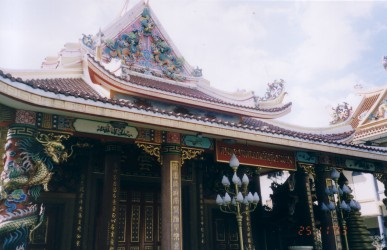Sau đó, chúng tôi đi thăm 2 chùa do người Việt thành lập từ ngày xưa, theo truyền thống Bắc tông. Đó là chùa Wat Upairadchabamrung (Chùa Khánh Vân) - thường gọi là Wat Yuan Talad Nod - ở đường Charoenkung, và chùa Wat Kusolsamakorn (Chùa Phổ Phước) ở đường Soi Kusorn. Đặc biệt, chùa Kusolsamakorn có một trường Phật học, đào tạo tăng tài trong truyền thống Bắc tông, và có gửi tu sĩ về Việt Nam để học nghi thức tụng niệm. Được biết trên đất Thái có tất cả 16 ngôi chùa của người Việt, trong đó có 7 chùa ở vùng Bangkok. Truyền thống Bắc tông tại các chùa nầy được chính phủ Thái Lan công nhận, và gọi là hệ phái Annam-nikaya. Cuối cùng, Sư Tường Phác đưa chúng tôi về chùa Wat Paknam, nơi Sư và 4 vị tỳ kheo Việt Nam khác đang tu học. Sư bố trí để các anh chị Phật tử Đà Nẳng được nghỉ tại khu khách xá của chùa. Thứ Tư, 26-11-2003: Buổi sáng, tôi vào Bangkok, hẹn gặp Sư Tường Phác và nhóm Phật tử VN tại chùa Wat Phra Keo. Đây là ngôi chùa chính của Thái Lan, trong chánh điện có thờ tượng Ngọc Phật (Phra Keo), là quốc bảo, và chùa là nơi vị Tăng Vương của Tăng đoàn Thái Lan trú ngụ. Bên cạnh chùa là hoàng cung. Chùa là một trong những điểm du lịch danh tiếng nhất của xứ sở này. Tiếp theo, chúng tôi đến viếng chùa Wat Mahathat, nơi có nhiều tăng sinh ngoại quốc đến tu học và nổi tiếng về chương trình giảng dạy Vi Diệu Pháp và các khóa thiền Vipassana. Tôi ghé qua nhà sách của chùa, mua vài tư liệu và hình ảnh Phật giáo. Sau đó, chúng tôi đến viếng chùa Wat Rajdanarama trong vùng Chalermkrung, nổi tiếng về một bảo tháp rất cao, xây dựng theo kiến trúc mới, dường như có pha trộn ảnh hưởng của kiến trúc Miến Điện. Trên tầng cao có thờ xá lợi Phật. Bên cạnh chùa là một khu phố nổi tiếng với rất nhiều gian hàng bán các hình tượng Phật đủ loại, đủ cỡ. Thứ Năm, 27-11-2003: Buổi sáng, tôi thức dậy sớm, để bát cho chư Tăng chùa Wat Donmuang. Sửa soạn hành lý, buổi chiều rời Bangkok, trở về Perth, kết thúc chuyến đi 4 tuần lễ nhiều ý nghĩa. ---*--- Nhìn lại, trong chuyến đi vừa qua, tôi đã có dịp thăm viếng 8 ngôi chùa ở Thái Lan, trong đó có 2 chùa của người Việt. Trong 3 tuần lễ tại Việt Nam, tôi đã có phước duyên đến dự các buổi lễ Dâng Y Kathina trong truyền thống Phật giáo Nguyên thủy; và đã đi thăm viếng 53 ngôi chùa, trong số đó có 20 chùa Bắc tông, 2 chùa Khất sĩ, 21 chùa Nam tông của người Việt và 10 chùa Nam tông của đồng bào Khmer. Chúng tôi cũng đã đến thăm và đóng góp tịnh tài, tổng cộng khoảng 37.2 triệu VND, vào các công tác từ thiện: - Cứu trợ nạn nhân lũ lụt miền Trung,
do chùa Thiền Quang và Kỳ Viên tổ chức: 6.2 triệu VND Ngoài ra, cùng với các bạn cựu sinh viên Kỹ sư Hóa học, chúng tôi có tổ chức thành lập một quỹ khuyến học, tài trợ các sinh viên nghèo thuộc khoa Hóa, Đại học Bách khoa tại Sài Gòn. Chuyến du hành năm nay mang nhiều ý nghĩa, gặt hái nhiều kết quả tốt đẹp. Đó là nhờ thiện tâm nhiệt tình khuyến khích, đóng góp và hỗ trợ của quý chư Tăng Ni thuộc mọi hệ phái, các đạo hữu và bạn bè trong nước lẫn tại hải ngoại. Chúng tôi chân thành ghi nhận và tán thán công đức của tất cả quý vị ân nhân đó. Kính ghi, Ghi chú:
[Trở
về trang Thư Mục] |